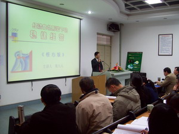

稳健经营——企业高层实战管理课程
张九元老师
来源：原创课程 点击:220次
职业生涯：
38年的职业生涯是这样度过的：6年政府公务员，8年大型国企中层管理者，4年小型国企法人代表，3年高校理论研究者，17年咨询公司顾问。
课程简介：
成为百年企业是每个企业的最爱，也是每个企业家梦魂萦绕的心愿。
企业家个人寿命是有限的，而企业经营是要持续的，企业只有通过培育超越企业家个人自然寿命限制的制度文化，才有可能成为持久经营的百年企业。
改革开放以来涌现出的一批“标志性企业”几乎同时败走“麦城”，或者出现不同程度的麻烦。其经营者曾是企业界的精英人物，然而，从如日中天到黯然失色乃至坠落却只有短暂的一瞬间。近些年，许多鼎鼎大名的中国企业都随着曾风光一时的企业精英或领袖的沉陷而销声匿迹了。纵观一些知名民营企业的发展轨迹，我们用“其兴也勃，其亡也忽”来形容是最恰当不过的了。我们必须承认，绝大多数中国企业还缺少超越企业家个人生命周期的机制，还没有建立起超越企业家个人文化的制度文化。通过培育优秀的制度文化而打造“百年企业”，中国企业还任重而道远。
2003年伊始，我国专家发现了“不老基因”，重庆西南医院宣布了让世界轰动的消息：该院内分泌科的专家们经过两年半时间，在基因实验时利用酵母双杂交技术，以端粒酶催化亚单位作“诱饵”，成功“钩”出6种与增龄性疾病(癌症、高血压、冠心病、糖尿病等)
有关的基因。一旦研究成功，将为预防和治疗增龄性疾病这一世界性难题做出巨大贡献，同时为人类的长寿铺平了道路。
企业的长寿问题研究，似乎还没有取得如此的成就。许多企业都是带病前行的，不健康、亚健康的企业占了全部企业的一半以上。讳疾忌医的有，误投庸医的也有。真正得到及时医治的少之又少。打造健康企业，进而培育长寿企业已成为当务之急。
我们这门课程就担负起了这一历史性的任务。
课程特色：
本课程以中国哲学思想为指导，借鉴西方科学管理的方法，形成了有中国企业特色的经营体系。
本课程特别注重中国企业的实际情况。借鉴众多知名企业的成功案例，采取理论与实用相结合的方法，讲述“稳”和“健”的因果关系。
这是一门以注重指导企业高、中层经营人员的实操性很强的课程，把理论融入到了具体的企业运作实践中，使学习收到即学即用的效果。
互动教学，学以致用，阐释案例，教授方法。
课程目标：
1、使学员接受稳健经营的理念
2、使学员能够正确区分经营与管理的职能
3、让学员在互动中了解稳和健的关系
4、教授学员把握企业稳健经营的方法
课程对象：
企业高层经营者、职业经理人;政府主管企业的官员;企业经营研究学者。
培训课时：
标准课程2天(12小时)，核心课程一天(6小时)。
课程提纲：
一、我们面临的新形势
1、国际经济危机的到来
2、后奥运经济的影响
3、十七届三中全会的重大意义
4、面对四万亿投资我们应该怎么办
二、稳健经营的迫切提出
1、先天不足，后天羸弱
2、来也冲冲，去也匆匆
3、百万“负翁”天下行
4、带病前行，负累而死
三、稳健经营的前提条件
1、准确的企业定位
2、正确的战略指引
3、全程控制投资欲望
4、扎实的基础工作
四、影响稳健经营的主要因素
1、9个主要影响因素
2、导致企业“出师未捷身先死”的6个表现
3、中国失败企业的8大教训
五、实操性的战略管理
1、准确定位企业
2、锁定企业目标
3、分析企业资源
4、定位盈利模式
5、确定实施步骤
6、培养核心竞争力
7、避免常见的战略误区
六、以稳保健才能稳如泰山
1、战略规划的指导意义
2、夯实稳健经营的基础
3、建立合适的治理结构
4、调整不稳的影响因素
5、建立完善的预警机制
6、塑造健康的企业文化
七、稳健经营的6个要点
1、企业扩张与“性成熟”
2、三角形的稳定性
3、保持现金流量
4、正确对待利润
5、打造核心竞争力
6、植入长寿基因
八、实现永续经营
1、确立价值观念
2、理念可使高瞻远瞩
3、管理基础必须坚实
4、企业风格决定成长
5、诚信决定生存
6、文化基因决定长寿
7、创新决定竞争力
8、整合智慧为己所用
9、打造长寿企业
10、实现永续经营
九、采取果断措施应对危机
1、和中央政府保持一致
2、吃透政策做足文章
3、把自己置身大环境
4、节衣缩食度过冬天
5、中小企业的经营原则
十、对企业的六点忠告
1、不能“超速成长”
2、“恒信”才能长盛
3、适时转型上台阶
4、抑制投资“冲动”
5、时刻关注现金流
6、没文化难长寿
说明：
1、留下大家提问的时间，听听大家有何困惑，回答大家的问题。
2、互动放在讲课过程中，不再单独列出。